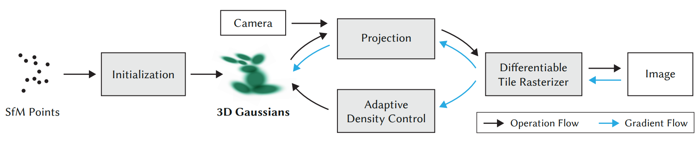
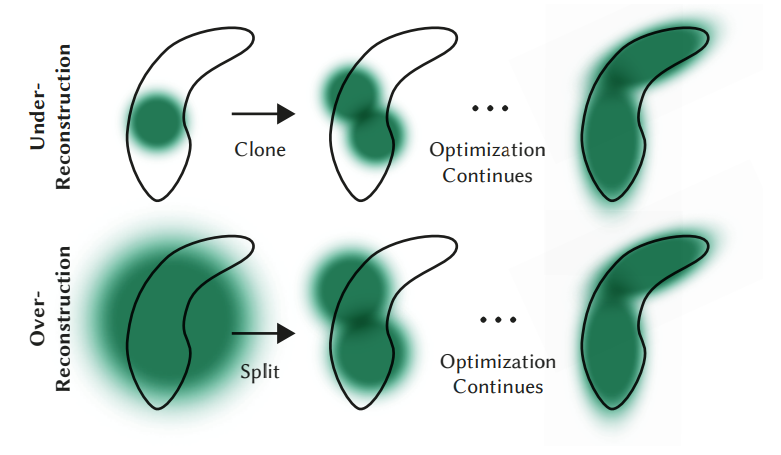

Notes for paper: 3D Gaussian Splatting for Real-Time Radiance Field Rendering
简介
问题
无边界、完整的场景的高分辨率（1080p）实时（$\geq$ 30 fps）渲染。
key idea
- 从相机校准过程中产生的稀疏点开始，用3D Gaussians表示场景，既保留了连续的volumetric radiance fields的性质以便优化，又避免了对空白位置的不必要的计算；
- 对3D Gaussians内联的优化/密度控制，显著优化anisotropic covariance，得到更精确的表示；
- visibility-aware的渲染算法，能实现anisotropic splatting，加快训练的同时还能进行实时渲染。
radiance field常用的连续表示（voxel, hash grids, points）便于优化，但是渲染过程中随机采样的消耗比较大，而且可能有噪声。本文的方法结合了以下两点：
- 3D Gaussian representation：SOTA级别的高质量视觉效果 + 训练时间短；
- tile-based splatting：实时渲染 + 1080p分辨率。
背景
传统的场景重建和渲染
- 最早的新视角合成基于light fields: densely sampled [Gortler et al. 1996; Levoy and Hanrahan 1996] —> allowing unstructured capture [Buehler et al. 2001]
- Structure-from-Motion (SfM) [Snavely et al. 2006]使得一系列照片可以被用来进行新视角合成
- Multi-view stereo (MVS) [Goesele et al. 2007]以及后续的几种视角合成算法 [Chaurasia et al. 2013; Eisemann et al. 2008; Hedman
et al. 2018; Kopanas et al. 2021] 的基本思想都是re-project and blend，用geometry引导re-projection。问题：cannot completely recover from unreconstructed regions, or from “over-reconstruction”, when MVS generates inexistent geometry - Neural rendering algorithms [Tewari et al. 2022] 显著减少了这些 artifacts，避免将所有输入图像存储到GPU，在诸多方面都超越了前面的方法。
Point-based Rendering
最简单的形式：point sample rendering，特点是能光栅化无结构的、大小固定的点的集合。
- 优点：能利用图形API中原生的点的数据类型，在GPU上进行并行的软件光栅化。
- 缺点：洞，走样，不连续。
- 解决这些问题的方法：”splatting” point primitives with an extent larger than a pixel, e.g., circular or elliptic discs, ellipsoids, or surfels [Botsch et al. 2005; Pfister et al. 2000; Ren et al. 2002; Zwicker et al. 2001b]
differentiable point-based rendering techniques: points haved been augmented with neural features and rendered using a CNN，可以更快（甚至实时）进行视角合成；但仍然依赖MVS对geometry进行初始化，inherited artifacts include over- or under-reconstruction in hard cases such as featureless/shiny areas or thin structures
Point-based $\alpha$-blending和NeRF的体渲染用的是相同的成像模型。典型的point-based approach通过融合同一个像素上重叠的N个有序点来计算颜色$C$：
其中$c_i$是每个点的颜色，$\alpha_i$是协方差为$\Sigma$的2D Gaussian和可学习的不透明度的乘积。$\prod\limits_{j=1}^{i-1}(1-\alpha_j)$是透射率（transmittance）。
但是Point-based $\alpha$-blending和NeRF的渲染算法是非常不一样的。NeRF连续、隐式地表示空间占用，随机采样消耗资源，而且有噪声；points是无结构、离散的表示，比较flexible，通过优化不透明度和位置来实现类似NeRF的geometry。
sphere rasterization启发了我们的tile-based and sorting renderer。我们的光栅化方法保留了可见性顺序，另外，还将梯度反向传播给所有splats，并光栅化anisotropic splats。
方法
Overview

Differentiable 3D Gaussians Splatting
场景表示：稀疏的SfM点云初始化3D Gaussians，without normals。
- 3D Gaussians由位置（均值）、协方差矩阵和不透明度$\alpha$定义：$G(x)=e^{-\frac{1}{2}(x)^T \Simga^{-1}(x)}$；
- 因为很难估计稀疏点的normals，而且优化noisy normals很困难，干脆用不需要normals的3D Gaussians。
优点：可微分，可以投影到2D splats进行快速的$\alpha$-blending。
协方差矩阵$\Sigma = RSS^TR^T$，其中$S$是scale matrix，$R$是rotation matrix。我们分开存放$S$和$R$，以便于独立进行优化：$S$存储为3D vector，$R$存储为四元数$q$，这些存储方式都可以被转换回矩阵形式，能正规化$q$得到单位四元数。
为了避免自动微分的overhead，我们显示地推导了所有参数的梯度。
用adaptive density control进行优化
本文方法的核心就是优化步骤，创建一个能精准表示场景的稠密的3D Gaussians。
除了3D position, opacity $\alpha$, anisotropic covariance之外，我们还优化表示每个Gaussian的颜色$c$的spherical harmonic (SH) coefficients，来更好地表达视角相关的外观。这些参数的优化与控制Gaussians密度的过程是耦合的。
在迭代过程中，不断地将渲染结果和对应视角的gt进行比较，来优化我们的3D Gaussians。因为3D to 2D投影具有不确定性，优化过程中需要对geometry做出调整。协方差矩阵的参数对于表示的紧性（compactness）至关重要，因为同质化的区域可以用很少的large anisotropic Gaussians来表示。优化使用的方法是随机梯度下降。
主要加速的地方是rasterization。
loss function: $L = (1 - \lambda)L_1 + \lambda L_{D-SSIM}$.
Adaptive control
- 缺失geometry feature的区域（under-reconstruction）：克隆一份Gaussian
- Gaussians很大的地方（over-reconstruction）：把一个大的Gaussian分成两半

可微渲染器
fast GPU sorting algorithms, inspired by tile-based rasterization
Thanks to our 3D Gaussian representation, we can perform anisotropic splatting that respects visibility ordering – thanks to sorting and 𝛼-blending – and enable a fast and accurate backward pass by tracking the traversal of as many sorted splats as required.
- 将屏幕分成$16 \times 16$ tiles，剔除视锥和每个tile外的3D Gaussians，只保留和视锥相交有99% confidence以上的Gaussians。另外，用guard band去除极端位置上的Gaussians（均值靠近近平面，或者在视锥外面很远处）。
- 根据重叠的tiles数目instantiate每个Gaussian，并且给每个instance赋予一个key（包括view space depth和tile ID）。
- 根据key给Gaussians排序，使用GPU Radix sort。
- 为每个tile生成了一个depth-sorted entry列表。
- 为每个tile分配一个thread block，每个block并行地装载一些Gaussians到共享的内存中，对每个像素，从头到尾遍历列表，累计颜色和不透明度，不透明度饱和时该线程停止。data loading/sharing 和处理过程都是并行的。每隔一段时间轮询这些线程的状态，如果所有像素都处理好了，就停止整个tile。
实验
- full set of scenes presented in Mip-Nerf360 [Barron 2022] — state-of-the-art in NeRF rendering quality
- two scenes from the Tanks and Temples dataset [Knapitsch 2017]
- two scenes provided by Deep Blending [Hedman 2018]